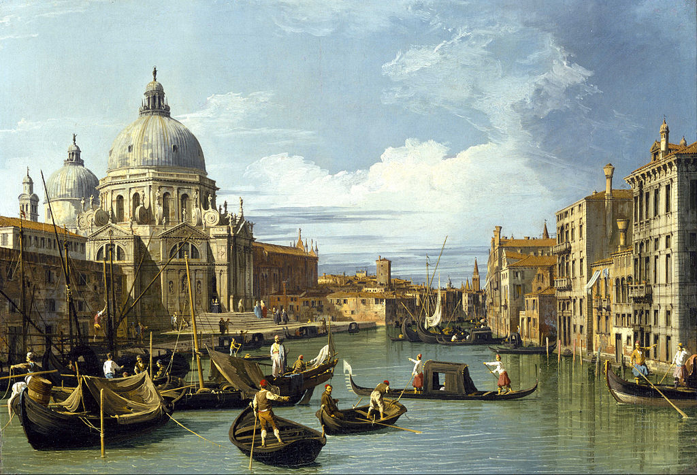

<head>
<meta charset="UTF-8" />
<meta name="keywords" content="drawing, painting" />
<meta name="description" content="drawings by Sunjy" />
<title>Sunjy</title>
<link rel="shortcut icon" type="image/x-icon" href="../../mImages/mCommon/favicon.ico" media="screen" />
<link rel="stylesheet" type="text/css" href="../../mCsses/mCommon/mCssA.css" />
<link rel="stylesheet" type="text/css" href="../../mCsses/mCommon/mCssB.css" />
<link rel="stylesheet" type="text/css" href="../../mCsses/mCommon/mCssC.css" />
<link rel="stylesheet" type="text/css" href="../../mCsses/mCommon/mCssD.css" />
<link rel="stylesheet" type="text/css" href="../../mCsses/mContent/mCssA.css" />
<link rel="stylesheet" type="text/css" href="../../mCsses/mContent/mCssB.css" />
<link rel="stylesheet" type="text/css" href="../../mCsses/mContent/mCssC.css" />
<link rel="stylesheet" type="text/css" href="../../mCsses/mContent/mCssD.css" />
</head>
<script type="text/javascript" src="../../mScripts/mContent/mContentAA.js" /></script>
<script type="text/javascript" src="../../mScripts/mContent/mContentAB.js" /></script>
<script type="text/javascript" src="../../mScripts/mContent/mContentAC.js" /></script>
<script type="text/javascript" src="../../mScripts/mContent/mContentAD.js" /></script>
<script type="text/javascript"></script> 
<script type="text/javascript">
document.write('<div class="mImgAbsolute"></div>');
/*
document.write('<p class="mFontSizeBColor" />From a white paper...</p>');
document.write('<table class="center"><tr><td>');
document.write('');
document.write('</td></tr></table>');
*/
</script>


<script type="text/javascript">
document.write('<p class="mFontSizeBColor" />The Entrance to the Grand Canal, Venice </p>');
document.write('<p class="mFontSizeSColor" />“The Entrance to the Grand Canal, Venice” by Canaletto portrays the Rococo landscape of the entrance to the Grand Canal, Venice.<br><br>This Canaletto is a typical example of the ‘vedute paintings’ popular with Grand Tour travelers of the 1700s as a visual record of their travels.<br><br>Canaletto was one of the most famous painters of city views or vedute, especially of Venice.<br><br>The composition is a veduta, a word derived from the Italian for “view,” which means a highly detailed, large-scale painting of a cityscape or some other vista.<br><br>From 1746 to 1756, Canaletto also worked in England, where he created many pictures of the sights of London. He was highly successful in England.<br><br>A British merchant and connoisseur Joseph Smith who sold his extensive collection of Canaletto’s paintings to King George III in 1762.<br><br>Canaletto’s paintings became highly prized as, during the 18th century, European monarchs vied for his grandest pictures.<br><br>Many of Canaletto’s paintings can be found in museums across the world, depict highly detailed, usually large-scale paintings of Venetian other famous cityscapes or vistas.<br></p>');
document.write('<table class="center" /><tr><td>');
document.write('<br>This Canaletto is a typical example of the ‘vedute paintings’ popular with Grand Tour travelers of the 1700s as a visual record of their travels.<br><br>Canaletto was one of the most famous painters of city views or vedute, especially of Venice.<br><br>The composition is a veduta, a word derived from the Italian for “view,” which means a highly detailed, large-scale painting of a cityscape or some other vista.<br><br>From 1746 to 1756, Canaletto also worked in England, where he created many pictures of the sights of London. He was highly successful in England.<br><br>A British merchant and connoisseur Joseph Smith who sold his extensive collection of Canaletto’s paintings to King George III in 1762.<br><br>Canaletto’s paintings became highly prized as, during the 18th century, European monarchs vied for his grandest pictures.<br><br>Many of Canaletto’s paintings can be found in museums across the world, depict highly detailed, usually large-scale paintings of Venetian other famous cityscapes or vistas.<br>" />');
document.write('</td></tr></table>');
</script>


